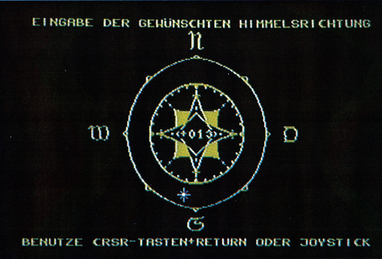
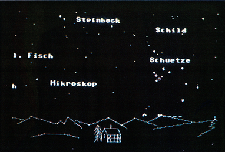

Sternenhimmel
Empfehlenswert nicht nur für Hobby-Astronomen: Diese gelungene Simulation für den C 64 macht komplizierte Sternenkarten und umfangreiche Tabellenwerke überflüssig.
Ein Planetarium ist eine komplizierte technische Einrichtung, die die von der Erde aus sichtbaren Himmelskörper für beliebige Standorte in Vergangenheit und Zukunft wirklichkeitsgetreu darstellen kann. Gerade in unseren Breiten, wo eine Betrachtung des natürlichen Sternenhimmels infolge von Wolken nur selten optimal möglich ist, kann eine solche Anlage helfen, sich über Sternbilder, Planetenbahnen, Mondphasen und vieles mehr zu informieren. Groß-Planetarien stehen Privatpersonen jedoch nur bei einzelnen Vorträgen oder Demonstrationen zur Verfügung. Wer darum einen Planeten am Himmel sucht oder wissen will, wie ein bestimmtes Sternbild heißt, der war bislang auf Sternkarten angewiesen. Abhilfe verspricht hier das Programm »Planetarium« für den C 64, das seit kurzem von DTM in Wiesbaden vertrieben wird.
Mit Liebe zum Detail
Nach dem Laden des Hauptteils erscheint zunächst als Titelbild unser Sonnensystem. Die Umlaufzeiten der sechs inneren Planeten werden dabei im Verhältnis zueinander korrekt wiedergegeben, das heißt, die sonnennahen Planeten Merkur und Venus laufen am schnellsten, Jupiter und Saturn am langsamsten.
Von diesem Sonnensystem gelangt man zu einer Weltkarte, auf der ein Sternsymbol den jeweiligen Standort des Beobachters markiert. Mit Hilfe der Cursor-Tasten oder einem Joystick bewegt man nun diesen Stern über die Karte und wählt damit beliebige Punkte der Erde an. Hierbei ist ein sowohl rasches Wechseln als auch ein feines Positionieren möglich. Die genauen Längen- und Breitengrade werden digital angezeigt, so daß die Einstellung sehr exakt erfolgen kann. Zusätzlich besteht die Möglichkeit, vorgewählte Paramater auf Diskette zu speichern. Man hat so beim Start immer gleich einen bestimmten Standort festgelegt. Nun müssen noch auf dem nächsten Bildschirm Datum und Uhrzeit eingegeben werden, wobei zwischen Ortszeit, mitteleuropäischer Winter- oder Sommerzeit gewählt werden kann. Anschließend berechnet das Programm die Position aller Sterne, die zu den gewählten Orts- und Zeitverhältnissen am Himmel sind, und erstellt eine erste Übersichtskarte. Wenn es Tag ist, wird der Hintergrund dieser Sternkarte etwas aufgehellt, um anzuzeigen, daß man wegen des hellen Sonnenlichts keine Sterne sehen könnte. Das C 64-Planetarium gibt aber die Möglichkeit, auch dann den Sternenhimmel zu betrachten. Dadurch kann man beispielsweise erfahren, in welchem Sternbild gerade die Sonne steht, oder wo sich bei Tag einzelne Planeten befinden.
Mittels einer grafisch sehr schön gestalteten Windrose (Bild 1) kann man nun mit dem Joystick oder den Cursor-Tasten die Himmelsrichtung festlegen. Zuletzt kann noch die Blickhöhe (von 0 bis 90 Grad) ausgewählt werden. Null Grad bedeutet dabei, daß die Bildschirmmitte des Planetariums genau auf den Horizont zeigen soll, 90 Grad entspricht einem Blick senkrecht nach oben, also zum Zenit des Himmels.

Nun endlich gelangt man in den Hauptteil des Planetariums, in den sogenannten Scroll-Modus. Hier wird ein für die eingestellten Parameter berechneter Himmelsausschnitt dargestellt, und zwar so, wie er sich einem Betrachter tatsächlich präsentieren würde. Dabei kann für die Darstellung durch einfachen Tastendruck (<M>) zwischen Multicolor- und HiRes-Modus umgeschaltet werden.
Rundumsicht per Joystick
Doch wieso heißt das Ganze Scroll-Modus? Nun, mit Hilfe der Cursor-Tasten oder mit dem Joystick kann von hier aus der Himmel in horizontaler und vertikaler Richtung abgetastet werden. Dies geschieht etwas ruckhaft, weil die Grafik jeweils neu aufgebaut werden muß, vermittelt aber dennoch ein sehr realistisches Bild. Blickt man weiter nach unten, so erscheint die Erdoberfläche als stilisierte Landschaft mit Bäumen und Häusern.
Im Scroll-Modus kann durch die Anwahl sinnentsprechender Buchstaben eine Reihe von Funktionen angesprochen werden, die den besonderen Reiz des Programms ausmachen. Zunächst ist es möglich, sich die jeweiligen Sternbilder durch verbindende Linien (<L>) sowie durch Angabe des Namens (<N>) kennzeichnen zu lassen (Bild 2); Planeten werden stets durch ihr astronomisches Symbol markiert, das auf der Menü-Seite (Anwahl durch <RETURN>) erläutert wird.

Vielseitige Funktionen
Die Variation des Gesichtsfeldwinkels (<W>) erlaubt einen gewissen Zoom-Effekt, das heißt es kann die Größe des in Bildschirmbreite angezeigten Himmelsausschnittes variiert werden. Eine echte Vergrößerung, also eine höhere Auflösung der Sterne oder etwa der Mondoberfläche, findet dabei natürlich nicht statt.
Zum Aussuchen eines bestimmten Himmelsobjektes kann man nach Drücken von <O> mit den Funktionstasten eine vorgegebene Liste absuchen und erhält dann die Angabe, ob und gegebenenfalls wo das Objekt derzeit zu sehen ist. Dieses wird daraufhin entweder sofort angezeigt oder kann unter Neuwahl der Werte für Zeit und Ort leicht gefunden werden. Damit läßt sich beispielsweise rasch ermitteln, ob an dem jeweiligen Tag irgendwo auf der Erde das Sternbild Orion oder der Planet Merkur zu sehen sind. Alle notwendigen Einstellungen lassen sich auf denkbar einfache Weise vornehmen; der ständig verfügbare Hilfsbildschirm macht dabei die Bedienungsanleitung fast überflüssig. In einem Übungsteil des Begleitheftes wird der Benutzer zusätzlich auf verschiedene Experimente mit dem Planetarium hingewiesen. Man erfährt dadurch beispielsweise viele interessante Einzelheiten über die Sternbilder, die Jahreszeiten, die Mondphasen und lernt sogar, wie man aus dem jeweiligen Sternenhimmel die geographische Lage oder die Uhrzeit ablesen kann.
Das Ganze wäre aber dennoch unvollständig, wenn man die Sterne nur auf dem Monitor betrachten könnte. Doch auch daran haben die Autoren gedacht und eine Hardcopy-Routine vorgesehen, die jederzeit aus dem Scroll-Modus heraus angesprochen werden kann (<D>). Standardmäßig lassen sich dazu Commodore-Drucker verwenden, doch gestattet ein umfangreiches Einstellmenü auch die Anpassung an beliebige andere grafikfähige Drucker mit seriellem oder parallelem Anschluß. Eine Centronics-Schnittstelle ist im Programm integriert. Die Dokumentation dieses für viele Anwender sicherlich sehr wichtigen Programmteils war jedoch in der von uns getesteten Vorab-Version noch äußerst dürftig und sollte bis zur endgültigen Fassung unbedingt verbessert werden, weil man das Innenleben seines Druckers schon sehr gut kennen muß, wenn man an dieser Aufgabe nicht verzweifeln will.
Gelungene Simulation
Abgesehen von diesem kleinen Wermutstropfen kann das »Planetarium« aber rundum als gelungen bezeichnet werden. Auch der Preis von knapp 60 Mark darf als durchaus hobbyfreundlich bezeichnet werden.
Eingefleischte Computerfreaks seien jedoch gewarnt: Wer sich einige Zeit mit dem »Planetarium« beschäftigt, der wird vermutlich sehr bald auch herausfinden wollen, wie Sterne und Sternbilder tatsächlich aussehen und darum manche klare Nacht nicht am Computer, sondern unter freiem Himmel verbringen.
(Dr. Rudolf Egg/nj)Info: DTM , Bornhofenweg 5, 6200 Wiesbaden, Tel. (06121) 407989